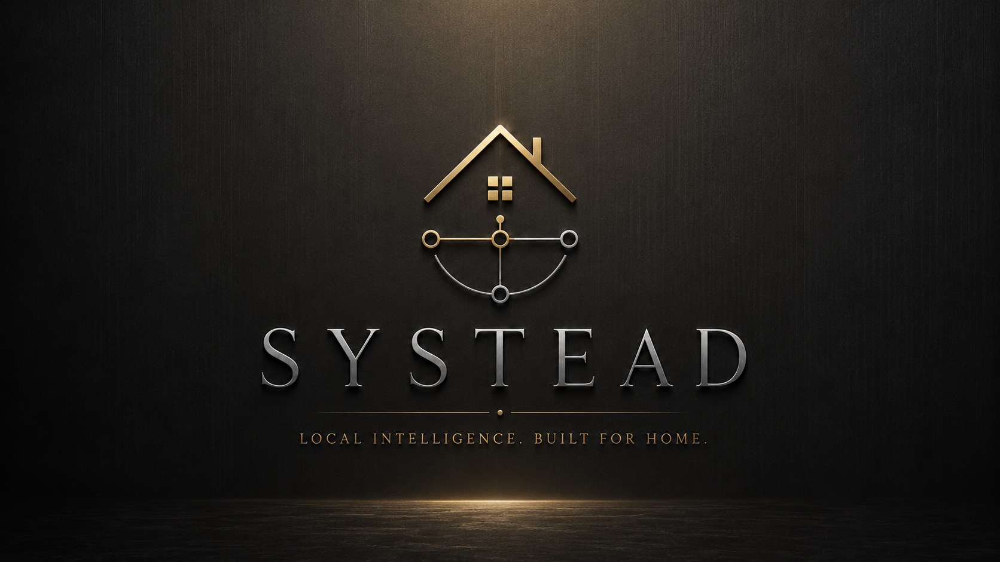

“I know it exists. I cannot find the right version.”
The House should distinguish current, working, superseded, disputed, imported, and archived records.

Systead is building the House: a private environment where knowledge, decisions, responsibilities, files, relationships, and specialist Programs can remain coherent over years.
Programs solve particular domains. Systead preserves the whole.
A working private flagship exists and is under real daily stress testing. Systead is not yet available as a supported public tester build.
The system exists. The public product contract is still being earned through daily use, failure discovery, recovery drills, and extraction of reusable Systead architecture from the private v10 proving ground.
Files, tasks, calendars, notes, chats, AI, and specialist software each hold fragments. The operator is forced to remember how those fragments fit together—and rebuild the situation every time context is lost.
The House should distinguish current, working, superseded, disputed, imported, and archived records.
Reasoning, evidence, alternatives, constraints, resulting actions, and later outcomes should remain connected.
Systead should reconstruct what changed, what became blocked, what remains uncertain, and what deserves attention first.
Observation, explanation, proposal, approval, execution, verification, and recovery should be separate authorities.
Specialist Programs should contribute depth without becoming separate kingdoms that own the operator’s context.
Projects, people, files, obligations, decisions, assets, and specialist workflows should remain related without becoming one giant dashboard.
Systead is the platform and broader product direction. A House is the operator’s configured environment. Programs are optional specialist applications inside that House.
The shared continuity, trust, memory, authority, portability, and Program foundation.
One operator’s private configuration: calm starting surfaces, Rooms, Desks, records, relationships, and selected Programs.
Deep domain applications that use House foundations without redefining Systead or owning the person.
The platform becomes valuable when it helps someone return, verify, understand consequences, resolve problems carefully, and find the places where human judgment still matters.
Reconstruct where I was, what changed, what remains unresolved, and what I should read first.
Show the source, decision history, uncertainty, contradictions, and most recent verification.
Show affected records, commitments, files, Programs, destinations, and automations before approval.
Preserve current state, show the plan, execute only what was approved, verify the result, and retain recovery.
Surface blocked responsibilities, conflicts, expiring commitments, and decisions that cannot be automated away.
Systead is not being designed for everyone. It is for people whose work, records, responsibilities, and decisions no longer fit cleanly inside one application.
Consultants, founders, researchers, and owner-operators who carry operational memory personally.
Authors, publishers, designers, and other creators managing versions, rights, releases, evidence, and continuity.
Homes carrying administration, assets, maintenance, records, recurring obligations, and shared practical memory.
Teams that need continuity and controlled sharing without buying enterprise bureaucracy or surrendering their data model.
Every serious person should be able to build institutional memory without having to become an institution.
Systead aims to make years of knowledge, decisions, responsibility, and operational history understandable—not merely stored.
At maturity, the House should survive interruptions, changing tools, changing AI models, devices failing, collaborators leaving, and even Systead itself being replaced.
The ambition is large. The visible product must remain calm: a few useful surfaces first, depth when requested, machinery when necessary.
Read the long-term visionA House is not a template-filled dashboard. It is a deliberately configured environment that can remain small or grow with the operator without exposing all complexity at once.
What changed, what matters, what is waiting, and what requires judgment.
Projects connected to evidence, decisions, people, dependencies, and completion.
Sources, manuals, research, conclusions, uncertainty, and history.
Contacts, assets, services, maintenance, administration, and recurring reality.
Observe, explain, reconstruct, propose, stage, and verify within declared authority.
These studies use synthetic data. The private v10 screens prove a working internal system exists, but visible controls, terminology, and Program boundaries may change before release.

The starting surface should explain what changed, what matters, and where the operator’s judgment is required.

A material action should show what it wants to do, why, what it touches, and how it will be checked or undone.

Publishing demonstrates specialist depth while remaining only one Program inside the broader House.
These are not release screenshots. Layout, language, Program naming, visible features, and product boundaries may change during private v10 extraction and stress testing.
The House must remain operator-owned, inspectable, honest about uncertainty, careful with authority, and capable of exit.
Pre-alpha is the honest state of a running private system whose outside-user installation, migration, recovery, security, naming, onboarding, and support promises are not yet proven.
A private flagship House is operating under real daily workload.
Stress testing, private v10 characterization, architecture extraction, recovery hardening, and public documentation.
Closed. No supported installer, onboarding flow, compatibility promise, or tester package.
AuthorMachine is an internal working name. The release identity remains undecided.
Directional and provisional. Private controls and screenshots are not a release contract.
Not announced. Readiness matters more than inventing a date.
The documentation separates the human product story from the heavier architecture, Program contracts, private v10 intake, stress testing, release gates, naming, and ownership direction.